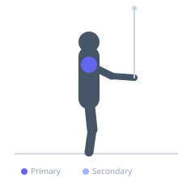
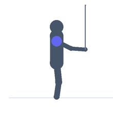

Exercise guide / Cable External Rotation at 90 Degrees
Cable External Rotation at 90 Degrees
Cable external rotation at 90 degrees is performed with the shoulder abducted to 90 degrees and the elbow bent to 90 degrees, rotating the forearm from pointing downward to pointing upward. This position replicates the late-cocking phase of throwing motions and directly trains the infraspinatus and teres minor — the primary external rotators of the shoulder — in a functionally relevant position that is critical for overhead athlete shoulder health.
Primary muscles
infraspinatus
Secondary muscles
deltoid posterior
Equipment
Cable Machine (High Pulley)


Starting position
- Set a cable pulley at approximately waist or chest height. Stand side-on with the working shoulder abducted to 90 degrees and elbow bent to 90 degrees. Grip the cable handle — forearm pointing toward the floor.
Setup
- Set the cable height so the forearm is horizontal when the shoulder is abducted. Use very light weight — the rotator cuff is a small and injury-prone muscle group.
Steps
- Step 1: Position the working arm at 90-90 (shoulder at 90 degrees abduction, elbow at 90 degrees).
- Step 2: Keeping the elbow fixed at shoulder height, rotate the forearm upward.
- Step 3: Continue until the forearm is pointing toward the ceiling or as far as comfortable.
- Step 4: Hold 1 second.
- Step 5: Rotate back slowly to the starting position (forearm toward floor).
Coaching cues
- Elbow stays at shoulder height — it is the fixed point
- Rotate the forearm only — the upper arm does not move
- Light weight, high quality
Breathing
- Exhale rotating up. Inhale rotating down.
Range of motion
- Forearm from pointing down to pointing up — approximately 180 degrees of forearm arc.
Tempo
- 2-1-2-0
Common mistakes
- Elbow dropping below shoulder level during the rotation
- Using too heavy a load — this is a small muscle isolation exercise
Safety
- Very light loads only — rotator cuff overloading is a common cause of impingement
- Stop immediately if sharp pain occurs in the shoulder
Training
- rehabilitation: 12–20 reps
- rehabilitation: 2–3 sets
- Rest: {'rehabilitation': 60}